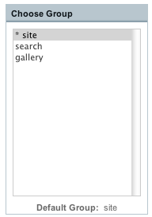
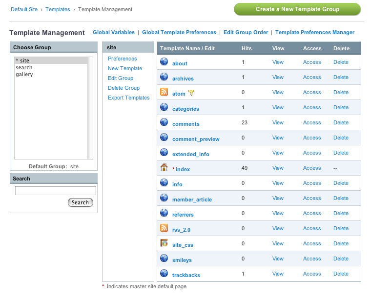

Main Templates Page
The main Templates page allows you manage your Templates. Clicking a particular Template Group name will reveal that Group so that you can work with it.
Tip: You can click multiple Group names to show more than one.

Once chosen, the Template Group will be shown.

Left Column
On the left side you'll find the Template Group name as well as several links:
- Preferences: Allows you to set preferences to any of the Templates within the Group.
- New Template: Allows you to add a new Template to the Template Group.
- Edit Group: Allows you to edit the name of the Template Group.
- Delete Group: Allows you to delete an entire Template Group and all Templates within it.
- Export Templates: Allows you to export Templates as text files.
Right Column
The right side you'll see a list of all the Templates that are part of the Group. There are several columns in the table:
- Template Name (Edit Template): Clicking the name allows you to edit the Template.
- Hits: The number of times the Template has been viewed or "hit" on your site.
- View: This opens the selected Template in a new window, displaying it as it will be rendered on your site.
- Access: Allows you to restrict the viewing of your templates based on Member Groups.
- Delete: Allows you to delete the Template.
Other Controls
There are also a few other controls at the top of the Templates page:
- New Template Group: Allows you to create additional Template Groups.
- Global Variables: Allows you to create your own custom variables.
- Global Template Preferences: Master preferences that affect all templates/groups.
- Edit Group Order: Permits you to rearrange the order that groups appear in the list.
- Template Preferences Manager: Manage Preferences and Access for Multiple Templates and Groups at once.